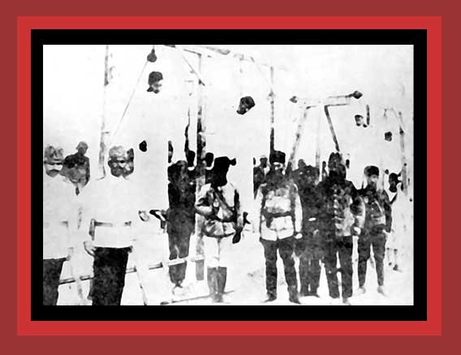

|
Among the first murdered by the Young Turks in their planned genocide of Turkey's Armenian minority in 1915 were the Armenian intellectuals. Here is shown a hanging of several of them. Documentation: see Death By Government and Statistics of Democide. Source: "The Armenian Genocide". |